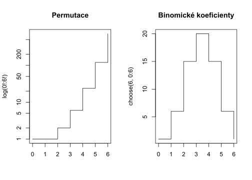
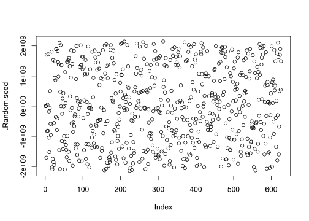
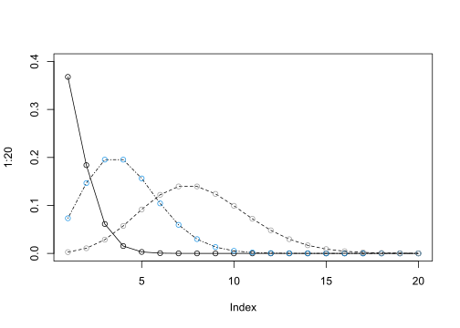
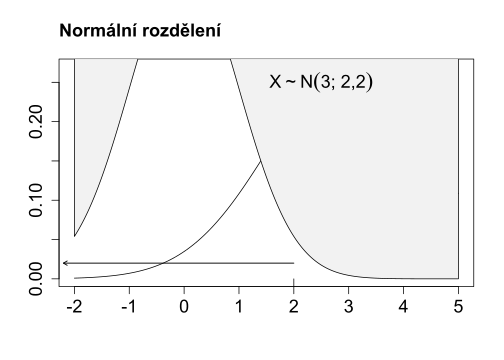
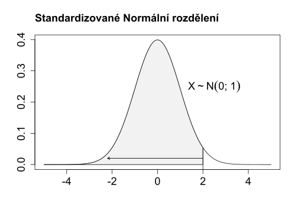

Kód
r___() # generování náhodných čísel z rozdělení
d___() # funkce hustoty rozdělení
p___() # Pravděpodobnostní funkce
q___() # Kvantilová funkce rozděleníV software R jsou všechna základní rozdělení součástí balíku stats. A jejich výčet získáme vyvoláním nápovědy ?distributions. Pracovat s rozděleními budeme čtyřmi způsoby: - budeme generovat náhodná čísla z rozdělení - budeme pracovat s kvantilovou funkcí daného rozdělení - počítat s hustotou a pravděpododobnostní funkcí
Balík stats obsahuje mnoho rozdělení. Alternativní, Binomické, Multinomické, Poissonovo, Normální, Fischer-Snedecorovo, \(\chi^2\), Studentovo \(t\), Gumbellovo a mnohá další.
Podívejte se na ?Distributions.
Pro práci s rozděleními jsou k dispozici obecně tři funkce:
r___() # generování náhodných čísel z rozdělení
d___() # funkce hustoty rozdělení
p___() # Pravděpodobnostní funkce
q___() # Kvantilová funkce rozděleníPro úplnost jsou zde uvedeny funkce pro permutace factorial() a kombinace choose().
par(mfrow = c(1,2))
plot(x = 0:6,
y = factorial(0:6),
type = "s",
main = "Permutace",
ylab = bquote("log(0!:6!)"),
xlab = "",
log = "y")
plot(x = 0:6,
y = choose(6, 0:6),
type = "s",
xlab = "",
main = "Binomické koeficienty")
Rozdělení pravděpodobnosti náhodné veličiny lze jednoznačně popsat tzv. distribuční funkcí Rovnice 7.1.
\[ F(x) = P(X\leq x) = P(\omega_i\in\Omega : X(\omega_i)\leq x) \tag{7.1}\]
Sestavuje se na základě sesbíraného vzorku dat, sděluje jak velký podíl dat je stejných nebo menších než konkrétní hodnota. K jejímu vytvoření potřebujeme data seřazená.
Qd <- read.fwf(file = "./data/01138000.dly",
widths = c(8, rep(10, times = 5)))[, 5]\[ P(X\leq x_k) \approx \dfrac{k - 0.3}{n + 0.4} \] kde \(k\) je pořadí v seřazeném souboru a \(n\) je počet prvků v souboru.
ecdf().Kvantilová funkce je inverzní funkcí k distribuční. Pokud distribuční funkce udává s jakou pravděpodobností bude hodnota náhodného pokusu menší nebo rovna \(x\), kvantilová funkce udává, pro jaké \(x\) bude výsledek náhodného pokusu s danou pravděpodobností \(y\) měnší nebo roven \(x\).
qnorm(p = 0.8, mean = 2, sd = 1)[1] 2.841621Pro generování náhodných čísel lze použít rozdělení.
runif(n = 10, min = 0, max = 1)
rpois(n = 15, lambda = 2.4)Generovaná čísla nejsou náhodná v pravém slova smyslu, ale označují se jako pseudonáhodná, neboť při jejich tvorbě se vychází z jiste sekvence čísel. Tuto sekvenci je možné přímo zvolit, čímž je zajištěna funkcí set.seed() volanou před každou vygenerovanou sekvencí.
seed <- .Random.seed
head(seed, 10) [1] 10403 2 1720120320 582581571 763621601 1312590416
[7] 466400942 -843120039 881076843 -1418879014plot(.Random.seed)
x <- sample(x = 1:1e3, size = 1)
set.seed(x)
runif(1)
set.seed(x)
runif(2)[1] 0.2609321
[1] 0.2609321 0.6904154Popisuje počet \(m\) úspěchů v posloupnosti \(N\) nezávislých 0/1 pokusů.
Poissonovo rozdělení (jinak také rozdělení vzácných jevů) je získáno aproximací binomického rozdělení v případech, kdy počet pozorování se limitně blíží k nekonečnu (\(N\rightarrow \infty\))
# par(mfrow = c(2, 2))
lambda <- c(1, 4, 8)
plot(x = 1:20, ylim = c(0,0.4), type = "n")
for(l in lambda) {
lines(dpois(x = 1:20, lambda = l), lty = l)
points(dpois(x = 1:20, lambda = l), col = l)
}
Řešení:
x <- vector(mode = "numeric", length = 365)
for(i in seq_along(x)) {
if(i == 1) next
x[i] <- ifelse(
test = x[i - 1] > 0,
yes = rbinom(n = 1,
size = 1,
prob = 0.10) * rchisq(n = 1,
df = 1,
ncp = 0),
no = rbinom(n = 1,
size = 1,
prob = 0.25) * rchisq(n = 1,
df = 3,
ncp = 1))
}
barplot(x,
ylim = 1.5*c(max(x), 0),
col = "dodgerblue4",
border = "dodgerblue4")
Během počítání s rozděleními se snažíme nalézt odpovědi na podobné otázky:
“Jaká je pravděpodobnost, že veličina \(X\) je menší než 7.5?”
Chceme spočítat pravědpodobnost, že náhodná hodnota, vybraná z populace \(X\sim \mathsf{N}(\mu = 3; \sigma^2 = 2,2)\) bude menší než \(5,5\). Početně je úkon řešen standardizací a určením nového


Provedeme standardizaci na \(Z\sim\mathsf{N}(0; 1)\) \[ Z = \dfrac{X - \mu}{\sigma} \approx \dfrac{5,5 - 3}{1,48324} \approx 1,6855 \] \(P(Z < 1,69)\) Spočítáme s pomocí kvantilu Standardizovaného Normálního rozdělení. Tento úkon R dělá z nás, ale pro porovnání si uvedeme obě varianty:
cbind(
N = pnorm(q = 1.6855, mean = 0, sd = 1, lower.tail = TRUE),
Z = pnorm(q = 5.5, mean = 3, sd = sqrt(2.2), lower.tail = TRUE)
) N Z
[1,] 0.9540539 0.9540539Hledaná pravděpodobnost je 95.45 %.
Zde je dobré upozornit na numerické zaokrouhlovací chyby, které během počítačového zpracování dat vznikají.
all.equal(
pnorm(q = 1.6855, mean = 0, sd = 1, lower.tail = TRUE),
pnorm(q = 5.5, mean = 3, sd = sqrt(2.2), lower.tail = TRUE)
)[1] "Mean relative difference: 3.473763e-08"all.equal(
pnorm(q = 1.6855, mean = 0, sd = 1, lower.tail = TRUE),
pnorm(q = 5.5, mean = 3, sd = sqrt(2.2), lower.tail = TRUE), tolerance = 0.005
)[1] TRUEcurve() vykreslete hustotu funkce normovaného normálního rozdělení danou předpisem: \[
f(x) = \dfrac{1}{\sqrt{2\pi}}e^{-\frac{x^2}{2}}
\]curve(). Pro praktické počítání s Normální rozdělením je užitečné si pamatovat pravděpodobnosti vybraných intervalů \(\mu\pm\{1,2,3\}\sigma\). S pomocí funkce integrate()Používá se pro odhad střední hodnoty souboru pocházejícího z normálního rozdělení s neznámým parametrem \(\sigma\). Více v Kapitola 9.
qt(p = 0.95, df = 100)[1] 1.660234Nabývá pouze kladných hodnot. Můžeme jej nalézt například v rozdělení **průtoků, simulacích chemické konncentrace.
Pro odhad a konstrukci \(m-\)denních průtoků používá Český hydrometeorologický ústav logaritmicko-normální rodzdělení s pěti parametry.
tvar transformace se třemi, s pěti a ve standardizovaném tvaru pro průtoky
\[ f(x;\mu, \sigma, \gamma, \alpha, \beta) = \dfrac{\beta}{(x-\gamma)\sigma\sqrt{2\pi}}\exp\left(-\frac{\left(\ln{\left(\dfrac{x-\gamma}{\alpha}\right)}-\mu\right)^2}{2\sigma^2}\right),\quad x>\gamma \]
Jinak také Fisherovo-Snedecorovo rozdělení je používáno pro sestrojení \(100(1-\alpha)\%\) intevalu spolehlivosti pro podíl rozptylů normálního rozdělení a je to modelové rozdělení testovací statistiky pro ověření shodnosti dvou rozptylů. V ?sec-anova nalezneme \(F-\)rozdělení u testování hypotézy o rovnosti středních hodnot u více než dvou výběrových souborů.
Narozdíl od předchozích zde uvedených rozdělení není \(\chi^2\) rozdělení u pozorovaných veličin příliš časté. Nicméně je to významné rozdělení z hlediska testování statistických hypotéz (Kapitola 9) při porovnávání rozdělení vzájemně. Používá se při stanovení intervalů spolehlivosti výběrový rozptyl.
\[ \dfrac{(n-1)s_x^2}{\chi^2_{1-\alpha/2}} \leq \sigma_x^2\leq \dfrac{(n-1)s_x^2}{\chi^2_{\alpha/2}} \tag{7.2}\]
set.seed(123). Doplňte střední hodnotu generovaného souboru c(15* /qchisq( , ), 15* /qchisq( , 15 ))